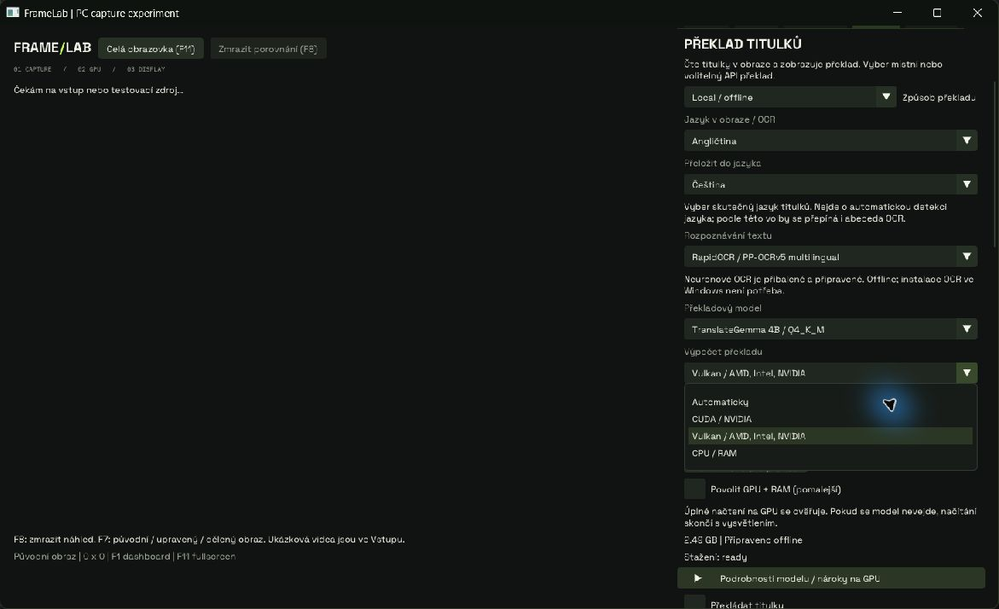
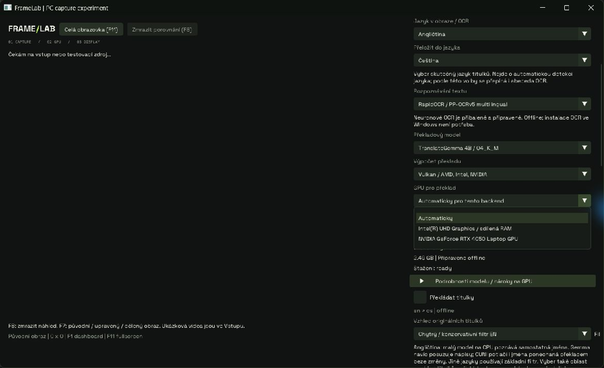

Vývojové měření; funkce vydané v preview.18 · 23. 11. 2026 · 32 překladů, čtyři krátké repliky na konfiguraci. Bez OCR, FG a NR. CUDA Flash Attention zapnutý, Vulkan/CPU vypnutý. Toto je ověření kompatibility a orientační rychlosti, ne nové hodnocení jazykové kvality.
Návod a metodika · Všechna data
| Model | Zařízení | Medián | Start + zahřátí | Log |
|---|---|---|---|---|
| cuni-q3km | cuda / NVIDIA | 0.74 s | 14.2 s | JSON |
| cuni-q3km | vulkan / NVIDIA | 5.26 s | 27.5 s | JSON |
| cuni-q3km | vulkan / Intel | 21.50 s | 25.4 s | JSON |
| cuni-q3km | cpu / Intel Core i5-13420H | 4.28 s | 15.1 s | JSON |
| translategemma-4b-q4km | cuda / NVIDIA | 0.49 s | 12.7 s | JSON |
| translategemma-4b-q4km | vulkan / NVIDIA | 2.52 s | 49.2 s | JSON |
| translategemma-4b-q4km | vulkan / Intel | 11.46 s | 50.8 s | JSON |
| translategemma-4b-q4km | cpu / Intel Core i5-13420H | 3.53 s | 15.1 s | JSON |
Na tomto notebooku je CUDA nejrychlejší. Intel UHD přes Vulkan model načte, ale je pomalejší než CPU. AMD karta nebyla k dispozici. Vulkan se týká překladače; nezpřístupňuje NR na nepodporované grafice.
Intel / Vulkan / CUNI: 6/6. RTX / Vulkan / Gemma: 6/6. Skutečné obrázky, RapidOCR, filtr jmen, překladový proces a fronta titulků. Rozdělené načtení GPU + RAM navíc ověřeno vynucením osmi GPU vrstev v testovacím harnessu; nešlo o měření automatického rozhodování pod tlakem VRAM.
Intel – finální log · RTX – finální log · GPU + RAM
Titulky → Local / offline → CUNI nebo TranslateGemma → Výpočet překladu. GPU pro překlad se vybírá nezávisle na grafice pro obraz. Na tomto notebooku je ponechána doporučená automatika, která použije CUDA.


w500-005 Don’t die, Delfador! Please, you have to stay alive!
Neumírej, Delfadore! Prosím, musíš zůstat naživu! (0.76 s)
w500-006 I am Delfador the Great! Tremble before my wrath!
Jsem Delfador Veliký! Třeste se před mým hněvem! (0.59 s)
w500-008 Did you think I was just playing around? I need to take my inheritance!
Myslíš, že jsem si jen tak hrál? Potřebuju své dědictví! (0.72 s)
w500-009 But they will not neglect to notice our presence in their midst! We are walking into slaughter!
Ale nezapomenou si všimnout naší přítomnosti v jejich středu! Vcházíme do jatka! (0.89 s)
w500-005 Don’t die, Delfador! Please, you have to stay alive!
Neumírej, Delfadore! Prosím, musíš zůstat naživu! (0.71 s)
w500-006 I am Delfador the Great! Tremble before my wrath!
Jsem Delfador Veliký! Třeste se před mým hněvem! (5.61 s)
w500-008 Did you think I was just playing around? I need to take my inheritance!
Myslíš, že jsem si jen tak hrál? Potřebuju své dědictví! (4.98 s)
w500-009 But they will not neglect to notice our presence in their midst! We are walking into slaughter!
Ale nezapomenou si všimnout naší přítomnosti v jejich středu! Vcházíme do jatka! (5.53 s)
w500-005 Don’t die, Delfador! Please, you have to stay alive!
Neumírej, Delfadore! Prosím, musíš zůstat naživu! (12.05 s)
w500-006 I am Delfador the Great! Tremble before my wrath!
Jsem Delfador Veliký! Třeste se před mým hněvem! (19.04 s)
w500-008 Did you think I was just playing around? I need to take my inheritance!
Myslíš, že jsem si jen tak hrál? Potřebuju své dědictví! (23.97 s)
w500-009 But they will not neglect to notice our presence in their midst! We are walking into slaughter!
Ale nezapomenou si všimnout naší přítomnosti v jejich středu! Vcházíme do jatka! (24.24 s)
w500-005 Don’t die, Delfador! Please, you have to stay alive!
Neumírej, Delfadore! Prosím, musíš zůstat naživu! (4.12 s)
w500-006 I am Delfador the Great! Tremble before my wrath!
Jsem Delfador Veliký! Třeste se před mým hněvem! (3.47 s)
w500-008 Did you think I was just playing around? I need to take my inheritance!
Myslíš, že jsem si jen tak hrál? Potřebuju své dědictví! (4.45 s)
w500-009 But they will not neglect to notice our presence in their midst! We are walking into slaughter!
Ale nezapomenou si všimnout naší přítomnosti v jejich středu! Vcházíme do jatka! (5.37 s)
w500-005 Don’t die, Delfador! Please, you have to stay alive!
Neumři, Delfadore! Prosím, musíš přežít! (0.47 s)
w500-006 I am Delfador the Great! Tremble before my wrath!
Já jsem Delfador, největší! Dejte pozor na mou zuřivost! (0.49 s)
w500-008 Did you think I was just playing around? I need to take my inheritance!
Myslíš, že jsem to jen tak blázní? Potřebuji získat své dědictví! (0.54 s)
w500-009 But they will not neglect to notice our presence in their midst! We are walking into slaughter!
Ale rozhodně nezapomenou na naši přítomnost! Jsme v ohrožení! (0.49 s)
w500-005 Don’t die, Delfador! Please, you have to stay alive!
Neumři, Delfadore! Prosím, musíš přežít! (2.52 s)
w500-006 I am Delfador the Great! Tremble before my wrath!
Já jsem Delfador, největší! Dejte pozor na mou zuřivost! (2.43 s)
w500-008 Did you think I was just playing around? I need to take my inheritance!
Myslíš, že jsem to jen tak blázní? Potřebuji získat své dědictví! (2.53 s)
w500-009 But they will not neglect to notice our presence in their midst! We are walking into slaughter!
Ale rozhodně nezapomenou na naši přítomnost! Jsme v ohrožení! (2.53 s)
w500-005 Don’t die, Delfador! Please, you have to stay alive!
Neumři, Delfadore! Prosím, musíš přežít! (11.06 s)
w500-006 I am Delfador the Great! Tremble before my wrath!
Já jsem Delfador, největší! Dejte pozor na mou zuřivost! (11.07 s)
w500-008 Did you think I was just playing around? I need to take my inheritance!
Myslíš, že jsem to jen tak blázní? Potřebuji získat své dědictví! (11.84 s)
w500-009 But they will not neglect to notice our presence in their midst! We are walking into slaughter!
Ale rozhodně nezapomenou na naši přítomnost! Jsme v ohrožení! (12.09 s)
w500-005 Don’t die, Delfador! Please, you have to stay alive!
Neumři, Delfadore! Prosím, musíš přežít! (3.28 s)
w500-006 I am Delfador the Great! Tremble before my wrath!
Já jsem Delfador, veliký! Dejte pozor na mou zuřivost! (3.25 s)
w500-008 Did you think I was just playing around? I need to take my inheritance!
Myslíš, že jsem to jen tak blázní? Potřebuji získat své dědictví! (3.92 s)
w500-009 But they will not neglect to notice our presence in their midst! We are walking into slaughter!
Ale rozhodně nezanechají bez povšimnutí naši přítomnost! Jsme v ohrožení! (3.78 s)